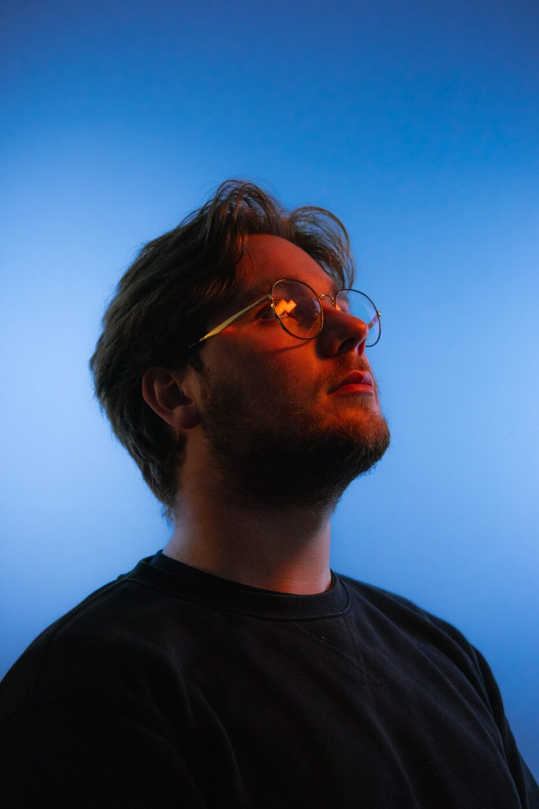
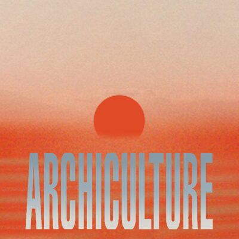
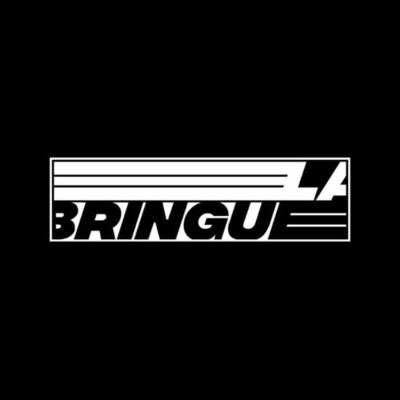
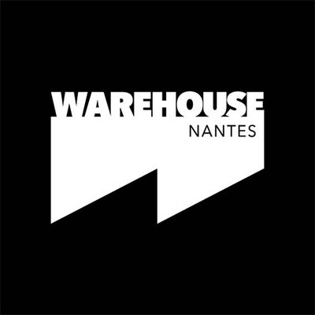
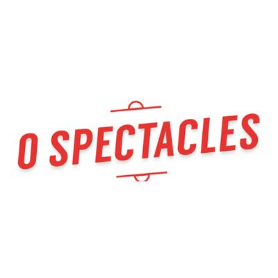

Photographe, Vidéaste et directeur artistique
Cyprien Vincent
Les projets récents
Qui suis je ?
Bonjour,
Designer de formation, j’ai toujours été guidé par le visuel, les couleurs et le sens du détail.
Au fil de mon parcours, j’ai développé une approche où l’œil ne se limite pas à observer, mais à diriger. Je conçois et structure des univers visuels.
Mon rôle consiste à traduire une vision en narration visuelle, en orchestrant les éléments pour en révéler toute la portée.
Photographe et vidéaste, j’interviens aujourd’hui sur la conception artistique, la direction et la production de projets visuels.

Ils m’ont fait confiance



